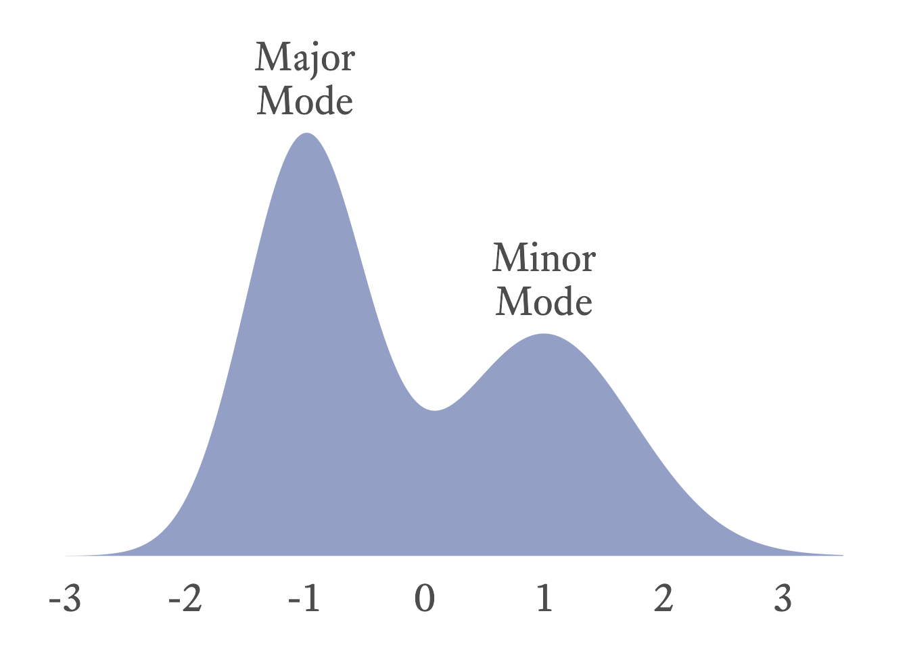
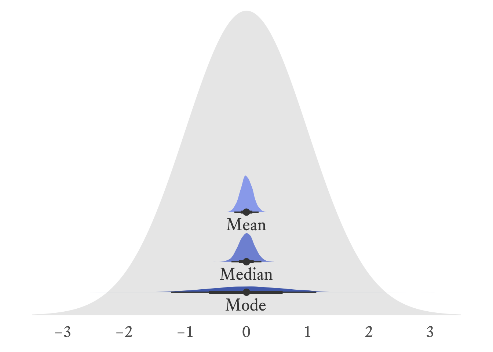
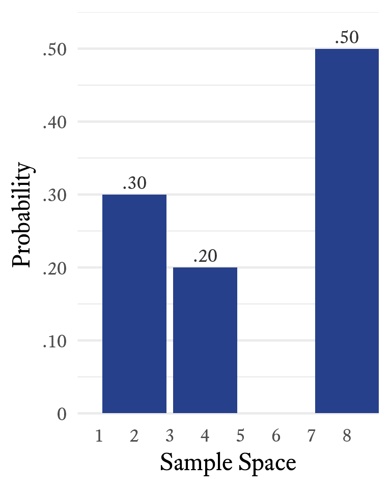
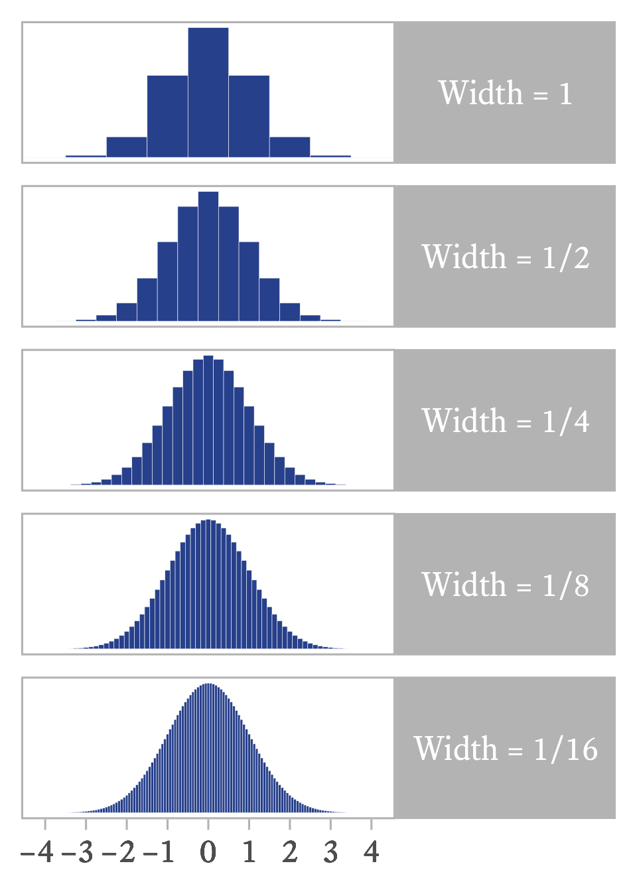

12 Measures of Central Tendency
If we need to summarize an entire distribution with a single number with the least possible information loss, we use a measure of central tendency—usually the mode, the median, or the mean. Although these numbers are intended to represent the entire distribution, they often require accompaniment from other statistics to perform this role with sufficient fidelity.
Our choice of which measure of central tendency we use to summarize a distribution depends on which type of variable we are summarizing (i.e., nominal, ordinal, interval, or ratio) and also a consideration of each central tendency measure’s strengths and weaknesses in particular situations.
12.0.1 Mode
The mode is the most frequent score in a distribution. Suppose we have a distribution that looks like this:
\{1,2,2,2,2,3,3\}
Because 2 occurs more frequently than the other values in the distribution, the mode is 2.
# Get the Garcia data set from the psych package
d <- psych::GarciaIn a frequency distribution table, the mode is the value with the highest value in the f (frequency) column. In Table 11.2, the mode is 1 because it has the highest frequency (f = 73).
In a bar plot, histogram, or probability density plot, the mode is the value that corresponds to the highest point in the plot. For example, in Figure 11.1, the modal value is 1 because its frequency of 73 is the highest point in the bar plot. In Figure 12.1, the mode is −1 because that is the highest point in the density plot.
If two values tie, both values are the mode and the distribution is bimodal. Sometimes a distribution has two distinct clusters, each with its own local mode. The greater of these two modes is the major mode, and the lesser is the minor mode (See Figure 12.1).

The mode is the only measure of central tendency that be computed for all variable types and is the only choice for nominal variables (See Table 12.2).
To compute the mode of a variable, use the mfv (most frequent value) function from the modeest package (Poncet, 2019). In this example, the 2 occurs four times.
# Data
x <- c(1,2,2,2,2,3,3)
# Mode
modeest::mfv(x)[1] 2The mfv function will return all modes if there is more than one. In this example, the 1, 3, and 4 all occur twice.
# Data
x <- c(1,1,3,3,4,4,5,6)
# Mode
modeest::mfv(x)[1] 1 3 412.0.2 Median
The median is midpoint of a distribution, the point that divides the lower half of the distribution from the upper half. To calculate the median, you first need to sort the scores. If there is an odd number of scores, the median is the middle score. If there an even number of scores, it is the mean of the two middle scores. There are other definitions of the median that are a little more complex, but rarely is precision needed for calculating the median.
To find the median using a frequency distribution table, find the first sample space element with a cumulative proportion greater than 0.5. For example, in the distribution shown in Table 12.1, the first cumulative proportion greater than 0.5 occurs at 5, which is therefore the median.
| X | Frequency | Cumulative Frequency | Proportion | Cumulative Proportion |
|---|---|---|---|---|
| 1 | 1 | 1 | .14 | .14 |
| 5 | 3 | 4 | .43 | .57 |
| 7 | 1 | 5 | .14 | .71 |
| 9 | 2 | 7 | .29 | 1 |
In this case, the median is 5 because it has the first cumulative proportion that is greater than 0.5.
If a sample space element’s cumulative proportion is exactly 0.5, average that sample space element with the next highest value. For example, in the distribution in Table 11.1, the cumulative proportion for 4 is exactly 0.5 and the next value is 6. Thus the median is
\frac{4+6}{2}=5
The median can be computed for ordinal, interval, and ratio variables, but not for nominal variables (See Table 12.2). Because nominal variables have no order, no value is “between” any other value. Thus, because the median is the middle score and nominal variables have no middle, nominal variables cannot have a median.
For ordinal variables, the median is the preferred measure of central tendency because it is usually more stable from one sample to the next compared to the mode.
In R, the median function can compute the median:
median(c(1,2,3))[1] 212.0.3 Mean
The arithmetic mean is the sum of all values of a distribution divided by the size of the distribution.
\mu_X = \frac{\sum_{i=1}^n {X_i}}{n}
Where \begin{align*} \mu_X &= \text{The population mean of } X\\ n &= \text{The number of values in } X \end{align*}
The arithmetic mean can only be calculated with interval or ratio variables. Why? The formula for the mean requires adding numbers, and the operation of addition is not defined for ordinal and nominal values.
The arithmetic mean is usually the preferred measure of central tendency for interval and ration variables because it is usually more stable from sample to sample than the median and the mode. In Figure 12.2, it can be seen that the sampling distributions of the mean is narrower than that of the median and the mode. In other words, it has a smaller standard error.

The standard normal distribution, \mathcal{N}(0,1), was used to generate 10,000 samples with a sample size of 100. The distribution of sample means is slightly narrower than the distribution of sample medians, meaning that the mean is slightly more stable than the median. The distribution of sample modes is very wide, meaning that the mode is much less stable than the mean and median.
In R, the mean function can compute the median:
mean(c(1,2,3))[1] 2Watch out for missing values in R. If the distribution has even a single missning value, the mean function will return NA, as will most other summary functions in R (e.g., median, sd, var, and cor).
mean(c(1,NA,3))[1] NATo calculate the mean of all non-missing values, specify that all missing values shoule be removed prior to calculation like so:
mean(c(1,NA,3), na.rm = TRUE)[1] 212.0.4 Comparing Central Tendency Measures
Which measure of central tendency is best depends on what kind of variable is needed and also what purpuse it serves. Table 12.2 has a list of comparative features of each of the three major central tendency measures.
| Feature | Mode | Median | Mean |
|---|---|---|---|
| Computable for Nominal Variables | Yes | No | No |
| Computable for Ordinal Variables | Yes | Yes | No |
| Computable for Interval Variables | Yes | Yes | Yes |
| Computable for Ratio Variables | Yes | Yes | Yes |
| Algebraic Formula | No | No | Yes |
| Unique Value | No | Yes | Yes |
| Sensitive to Outliers/Skewness | No | No | Yes |
| Standard Error | Larger | Smaller | Smallest |
12.1 Expected Values
At one level, the concept of the expected value of a random variable is really simple; it is just the population mean of the variable. So why don’t we just talk about population means and be done with this “expected value” business? It just complicates things! True. In this case, however, there is value in letting some simple things appear to become complicated for a while so that later we can show that some apparently complicated things are actually simple.
Why can’t we just say that the expected value of a random variable is the population mean? You are familiar, of course, with the formula for a mean. You just add up the numbers and divide by the number of numbers n:
m_X=\frac{\sum_{i=1}^{n} {x_i}}{n}
Fine. Easy. Except…hmm…random variables generate an infinite number of numbers. Dividing by infinity is tricky. We’ll have to approach this from a different angle…
The expected value of a random variable is a weighted mean. A mean of what? Everything in the sample space. How are the sample space elements weighted? Each element in the sample space is multiplied by its probability of occurring.

Suppose that the sample space of a random variable X is {2, 4, 8} with respective probabilities of {0.3, 0.2, 0.5}, as shown in Figure 12.3.
The notation for taking the expected value of a random variable X is \mathcal{E}(X). Can we find the mean of this variable X even if we do not have any samples it generates? Yes. To calculate the expected value of X, multiply each sample space element by its associated probability and then take the sum of all resulting products. Thus,
\begin{align*} \mathcal{E}(X)&=\sum_{i=1}^{3}{p_i x_i}\\ &= p_1x_1+p_2x_2+p_3x_3\\ &= (.3\times 2)+(.2\times 4)+(.5\times 8)\\ &=5.4 \end{align*}
The term expected value might be a little confusing. In this case, 5.4 is the expected value of X but X never once generates a value of 5.4. So the expected value is not “expected” in the sense that we expect to see it often. It is expected to be close to the mean of any randomly selected sample of the variable that is sufficiently large.

\mathcal{E}(X)=\lim_{n \to \infty} \frac{1}{n}\sum_{i=1}^{n} {x_i}
If a random variable X is discrete, its expected value \mathcal{E}(X) is the sum of each member of the sample space x_i multiplied by its probability of occurring p_i. The probability of occurring is the output of X’s probability density function at that location: p_i=f_X(x_i). Thus,
\mathcal{E}(X)=\sum_{i=-\infty}^{\infty}{x_i f_X(x_i)}
With continuous variables, the number of elements in a sample is infinite. Fortunately, calculus was designed to deal with this kind of infinity. The trick is to imagine that the continuous variable is sliced into bins and that the bins are sliced ever more thinly. If a continuous random variable has probability density function f_X(x), the expected value is
\mathcal{E}(X)=\int_{-\infty}^{\infty} {x f_X(x)\,\mathrm{d}x}
If we multiply each value of X by the height of its bin (p), we get the mean of the binned distribution. If the bins become ever thinner, as in Figure 12.4, the product of X and p approximates the expected value of the smooth continuous distribution.
12.1.1 Algebra of Expected Values
If k is a constant, its expected value is itself.
\mathcal{E}(k)=k A constant can be factored out of an expected value operator.
\mathcal{E}(kX)=k\mathcal{E}(X) The expected value of the sum of two random variables is the sum of their respective expected values:
\mathcal{E}(X+Y)=\mathcal{E}(X)+\mathcal{E}(Y)